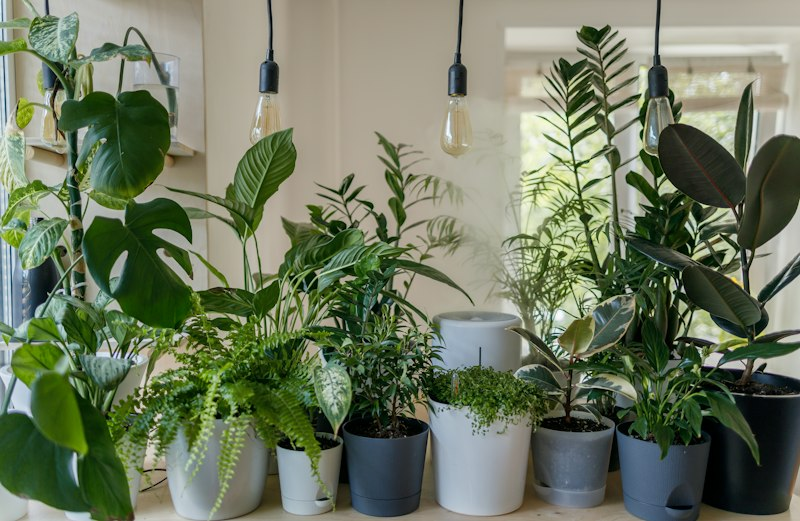

1. Visual Bounding Box
Identifies the region of interest where neural network activation maps triggered the highest spatial anomaly response.

Early blight is a prevalent fungal disease caused by Alternaria solani. It primarily affects older foliar tissue, exhibiting dark, irregular necrotic spots characterized by distinctive concentric rings ("target board" pattern) surrounded by chlorotic yellow halos.
* Disclaimer: Sample results are illustrative and do not represent a real diagnosis.
How a production agricultural vision system structures critical data for rapid comprehension in the field.
Identifies the region of interest where neural network activation maps triggered the highest spatial anomaly response.
Rather than an opaque single answer, the multi-class bar displays relative likelihood across alternative diseases and healthy tissue.
Immediately bridges identification with physical, cultural, and biological countermeasures to arrest pathogen spread.